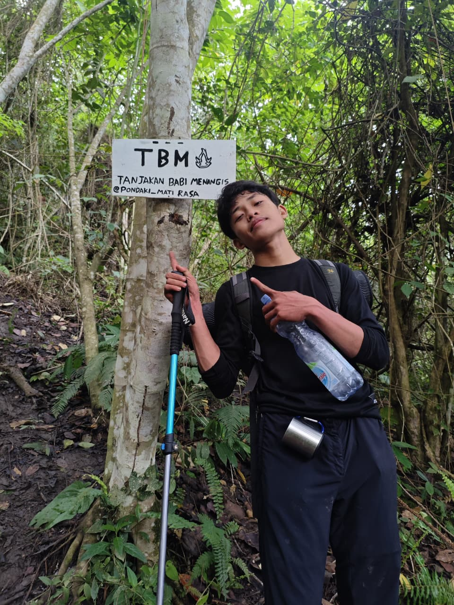
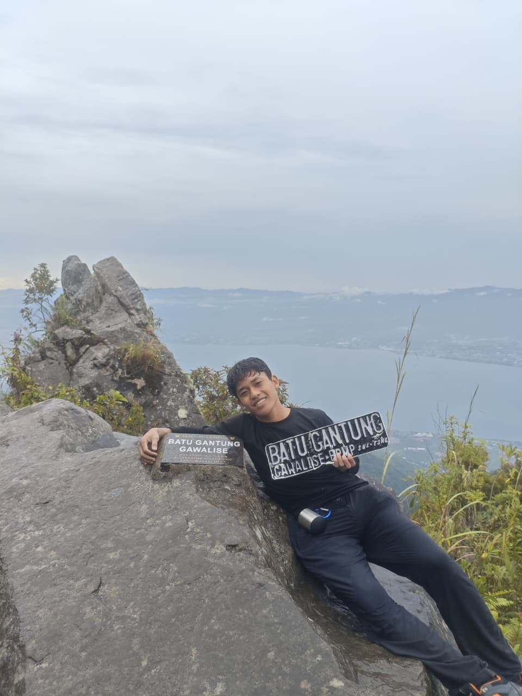
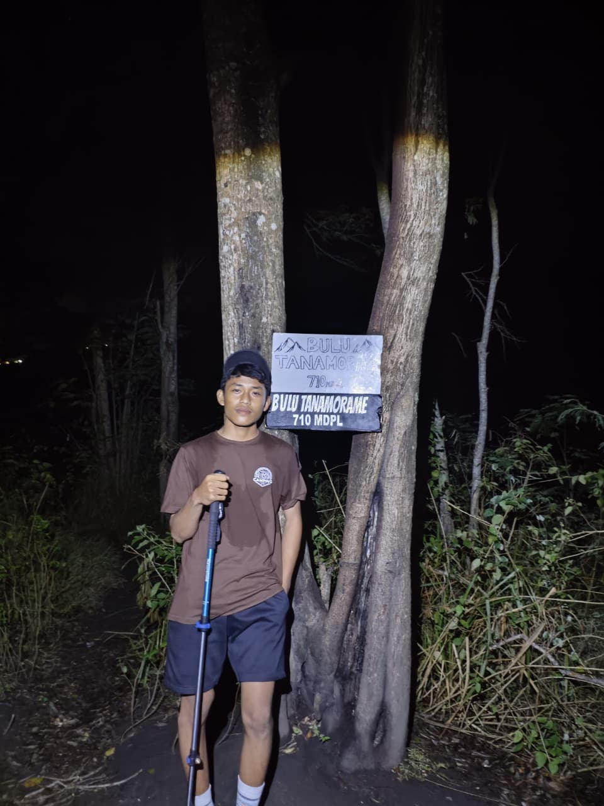

Jejak Langkah Di Alam Bebas
Dipublikasikan pada 28 September 2026
Setiap perjalanan selalu meninggalkan cerita. Ini adalah beberapa momen pendakian terbaru saya—menikmati sejuknya udara pepohonan, menyusuri jalur setapak, dan menemukan ketenangan jauh dari hiruk-pikuk kota. Alam selalu punya cara terbaik untuk memulihkan energi.



Profil & Portofolio Saya
Diperbarui pada 2 Oktober 2026
Halo! Saya adalah seorang mahasiswa yang antusias dalam dunia kesehatan, teknologi. Saya suka alam bebas. Saya percaya bahwa keseimbangan antara pendidikan profesional dan hobi di luar ruangan dapat membentuk karakter yang tangguh dan adaptif.
🎓 Riwayat Pendidikan
- Politeknik Cendrawasih Palu - Saat ini sedang menempuh pendidikan di bidang Medical Record (Rekam Medik) / Manajemen Informasi Kesehatan.
- SMKN 1 Sigi - Alumni program kejuruan Teknik Komputer dan Jaringan (TKJ).
⚙️ Keahlian Utama (Skills)
- Kesehatan & Data: Pemahaman sistem Rekam Medis dan pengelolaan informasi kesehatan.
- Teknologi Informasi: Jaringan komputer (TKJ), MS Word, MS PowerPoint, MS Excel (Dasar Excel).
- Soft Skills: Kepemimpinan lapangan, manajemen logistik, dan kerja sama tim (terlatih melalui kegiatan alam bebas).
⛰️ Minat & Hobi (Interests)
Selain fokus pada pendidikan, saya berasal dari Kec. Dolo dan menghabiskan waktu luang dengan melakukan aktivitas fisik seperti Mendaki Gunung, Bermain Badminton, dan Bersepeda.